4130B20 POWER STEERING PUMP - R.R.
- Path
- Procedures > 41 STEERING UNIT > 4130 POWER STEERING > 4130B POWER STEERING HYDRAULIC SYSTEM > 4130B20 POWER STEERING PUMP - R.R.
- Kind
- repair procedure (removal / refitting; the operation number is the code)
- Applies to
- all engines; all production periods
- Interactive page
- https://sloeber94.github.io/elrnDB-aBrrSpdr/en/#/946002181
Applies to: engines: 2.2 JTS; all production periods
 Removing
Removing
 Refitting
Refitting- Make sure that the ignition key is in the OFF position, then disconnect the battery terminal (-).
Description | Connector | |
|---|---|---|
- | Battery |
Op. 1048A34 HOSE(S) FROM FLOW METER TO AIR SUPPLY CAPACITY CASE - R + R
Op. 1056F17 THROTTLE BODY WITH DVL - R.R.
Op. 1072B50 AIR CHAMBER - R.R.
- Draw off the power assisted steering fluid from the reservoir using a suitable syringe.
1. Undo the connector (1a) and disconnect the supply pipe from the pump to the power assisted steering box (1b), power assisted steering pump side.
2. Loosen the band and disconnect the power assisted steering fluid pipe from the reservoir to the pump, power assisted steering pump side.
3. Release and remove the belt from the air conditioning compressor to the power assisted steering pump.
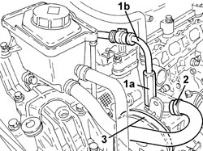
Applies to: engines: 2.2 JTS; all production periods
1. Undo the bolts (1a), (1b) and remove the power steering pump (1c).
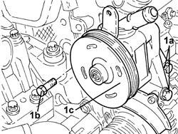
Applies to: engines: 2.2 JTS; all production periods
Refitting
Removing1. Place the power steering pump (1a) in its housing and secure it by tightening the bolts (1b) and (1c) to the recommended torque.
Component | Fastening | dia | Value (daNm) | Validity |
|---|---|---|---|---|
Power assisted steering pump | Bolt | M8 | (cylinder head side) 1.9 - 2.1 | 1.9 JTS 2.2 JTS 3.2 JTS |
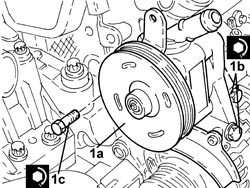
Applies to: engines: 2.2 JTS; all production periods
1. Fit belt from the air conditioning compressor to the power assisted steering pump.
2. Connect the supply pipe from the fluid reservoir to the power assisted steering pump, power assisted steering pump side, and tighten the band.
3. Connect the supply pipe from the pump to the power assisted steering box (3a), power assisted steering pump side and tighten the connector (3b) to the recommended torque.
Component | Fastening | dia | Value (daNm) | Validity |
|---|---|---|---|---|
Supply pipe from pump to power assisted steering box | Connector | M16 | (power assisted steering pump side) 3.6 - 4.4 |
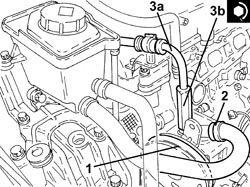
Applies to: engines: 2.2 JTS; all production periods
Op. 1072B50 AIR CHAMBER - R.R.
Op. 1056F17 THROTTLE BODY WITH DVL - R.R.
Op. 1048A34 HOSE(S) FROM FLOW METER TO AIR SUPPLY CAPACITY CASE - R + R
Op. 0010T71 POWER STEERING FLUID CHECK LEVEL AND TOP UP IF NECESSARY
Op. 0010T75 HYDRAULIC POWER STEERING SYSTEM BLEED AIR
- Connect the negative battery terminal.
Applies to: engines: 3.2 JTS; all production periods
Removing
RefittingOp. 4450B04 RIGHT FRONT WHEEL - R.R
Op. 7055B66 ENGINE COMPARTMENT DUST COVER IN RIGHT FRONT WHEEL ARCH - R.R.
Op. 7055B91 RIGHT FRONT WHEEL ARCH LINER - R.R.
1. Operate the mobile belt tensioner and prise up the auxiliary drivebelt from the power steering pump pulley.
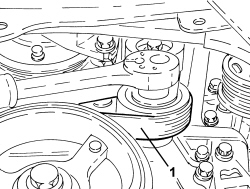
Applies to: engines: 3.2 JTS; all production periods
Op. 4130B34 SUPPLY PIPE FROM FLUID RESEVIOR TO POWER STEERING PUMP - R.R.
1. Undo the connector (1a) of the supply pipe from the pump to the power assisted steering box (1b), pump side, and move aside.
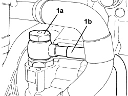
Applies to: engines: 3.2 JTS; all production periods
1. Undo the power assisted steering pump rear fixing bolt.
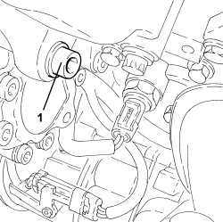
Applies to: engines: 3.2 JTS; all production periods
1. Working through the power steering pump pulley holes, unscrew the remaining bolts (1a) and remove power steering pump (1b).
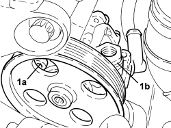
Applies to: engines: 3.2 JTS; all production periods
Refitting
Removing- Fit the power steering pump in its seat and tighten the bolts to the recommended torque.
Component | Fastening | dia | Value (daNm) | Validity |
|---|---|---|---|---|
Power assisted steering pump | Bolt | M8 | 1.9 ÷ 2.1 |
- Place the supply pipe from the pump to the power assisted steering box back in its housing and tighten the connector to the recommended torque.
Component | Fastening | dia | Value (daNm) | Validity |
|---|---|---|---|---|
Delivery pipe from pump to power assisted steering box - power steering pump side | Connector | M16 | 3.6 ÷ 4.4 |
Op. 4130B34 SUPPLY PIPE FROM FLUID RESEVIOR TO POWER STEERING PUMP - R.R.
- Operate the mobile belt tensioner and prise up the auxiliary drivebelt from the power steering pump pulley.
Op. 7055B91 RIGHT FRONT WHEEL ARCH LINER - R.R.
Op. 7055B66 ENGINE COMPARTMENT DUST COVER IN RIGHT FRONT WHEEL ARCH - R.R.
Op. 4450B04 RIGHT FRONT WHEEL - R.R
Op. 0010T71 POWER STEERING FLUID CHECK LEVEL AND TOP UP IF NECESSARY
Applies to: engines: 2.4 JTD 20v; all production periods
Removing
Refitting- Position the vehicle on the lift.
Op. 1016A10 SOUND-PROOFING COVER - R.R
Op. 1048A41 HOSE FROM FLOW METER TO TURBOCHARGER - R.R.
Op. 4450B04 RIGHT FRONT WHEEL - R.R
Op. 7055B66 ENGINE COMPARTMENT DUST COVER IN RIGHT FRONT WHEEL ARCH - R.R.
Op. 7055B91 RIGHT FRONT WHEEL ARCH LINER - R.R.
Op. 1092G10 SINGLE ENGINE BELT - R.R
1. Loosen the band (1a), unscrew bolt (1b) and disconnect the power assisted steering fluid pipe from the reservoir to the power assisted steering pump (1c), power assisted steering pump side.
2. Undo the connector (2a) and disconnect the supply pipe from the pump to the power assisted steering box (2b), power steering pump side.
3. Undo the rear power assisted steering pump fixing bolts.
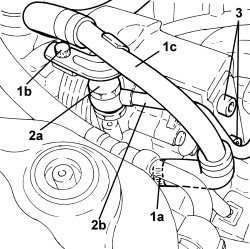
Applies to: engines: 2.4 JTD 20v; all production periods
1. Undo the front bolts (1a) and remove the power steering pump (1b).
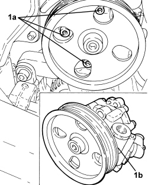
Applies to: engines: 2.4 JTD 20v; all production periods
Refitting
Removing1. Place the power steering pump (1a) in its housing and secure it by tightening the bolts (1b) to the recommended torque.
Component | Fastening | dia | Value (daNm) | Validity |
|---|---|---|---|---|
Power assisted steering pump | Front bolt | M8 | (support side) 2.2 - 2.6 | 2.4 JTD 20V |
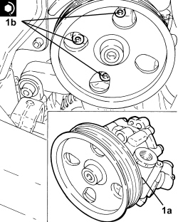
Applies to: engines: 2.4 JTD 20v; all production periods
1. Tighten the bolt securing the power steering pump to the recommended torque.
Component | Fastening | dia | Value (daNm) | Validity |
|---|---|---|---|---|
Power assisted steering pump | Rear bolt | M8 | (support side) 2.2 - 2.6 | 2.4 JTD 20V |
2. Connect the supply pipe from the pump to the power assisted steering box (2a), power steering pump side side and tighten the connector (2b) to the recommended torque.
Component | Fastening | dia | Value (daNm) | Validity |
|---|---|---|---|---|
Supply pipe from pump to power assisted steering box | Connector | M16 | (power assisted steering pump side) 3.6 - 4.4 |
3. Connect the supply pipe from the fluid reservoir to the power assisted steering pump (3a), power assisted steering pump side, and tighten the band (3b).
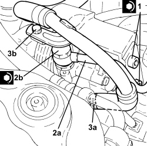
Applies to: engines: 2.4 JTD 20v; all production periods
Op. 1092G10 SINGLE ENGINE BELT - R.R
Op. 7055B91 RIGHT FRONT WHEEL ARCH LINER - R.R.
Op. 7055B66 ENGINE COMPARTMENT DUST COVER IN RIGHT FRONT WHEEL ARCH - R.R.
Op. 4450B04 RIGHT FRONT WHEEL - R.R
Op. 1048A41 HOSE FROM FLOW METER TO TURBOCHARGER - R.R.
Op. 0010T71 POWER STEERING FLUID CHECK LEVEL AND TOP UP IF NECESSARY
Op. 0010T75 HYDRAULIC POWER STEERING SYSTEM BLEED AIR
Op. 1016A10 SOUND-PROOFING COVER - R.R
- Remove the vehicle from the lift.
Topics linked from this page (13)
- 0010T71 POWER STEERING FLUID CHECK LEVEL AND TOP UP IF NECESSARY
- 0010T75 HYDRAULIC POWER STEERING SYSTEM BLEED AIR
- 1016A10 SOUND-PROOFING COVER - R.R
- 1048A34 HOSE(S) FROM FLOW METER TO AIR SUPPLY CAPACITY CASE - R + R
- 1048A41 HOSE FROM FLOW METER TO TURBOCHARGER - R.R.
- 1056F17 THROTTLE BODY WITH DVL - R.R.
- 1072B50 AIR CHAMBER - R.R.
- 1092G10 SINGLE ENGINE BELT - R.R
- 4130B34 SUPPLY PIPE FROM FLUID RESEVIOR TO POWER STEERING PUMP - R.R.
- 4450B04 RIGHT FRONT WHEEL - R.R
- 7055B66 ENGINE COMPARTMENT DUST COVER IN RIGHT FRONT WHEEL ARCH - R.R.
- 7055B91 RIGHT FRONT WHEEL ARCH LINER - R.R.
- A001 BATTERY